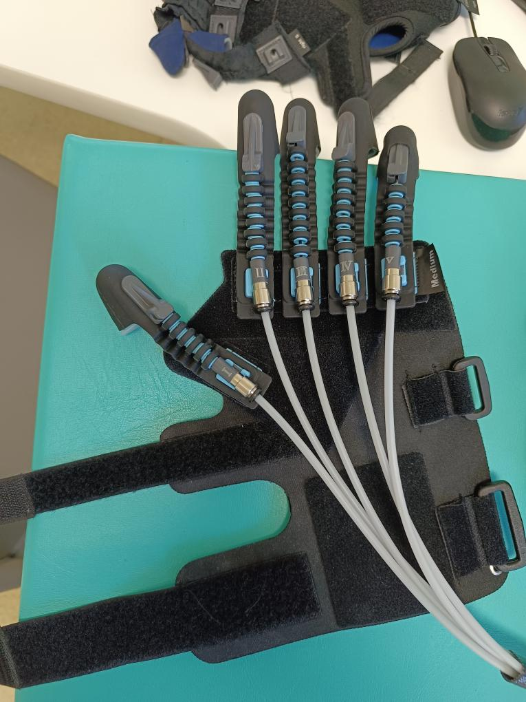

🩺 Od postřehů z praxe k inovaci: Proč vyvíjím novou generaci rehabilitační rukavice
Rehabilitace ruky po cévní mozkové příhodě nebo úrazu je pro pacienty jednou z nejtěžších a nejdůležitějších cest k návratu do běžného života. Moderní technologie, jako je robotická rukavice Gloreha, přinesly revoluci do pasivního i aktivního procvičování. Ale jaká je realita každodenní práce na rehabilitačním oddělení?
Abych to zjistil, navštívil jsem rehabilitační oddělení nemocnice v Uherském Hradišti a mluvil přímo s těmi nejpovolanějšími – s fyzioterapeuty. Mým cílem nebylo jen vidět techniku v akci, ale především naslouchat. A právě v postřezích z praxe se zrodil můj projekt.
Výzva: Když se špičková technologie potká s realitou
Systémy jako Gloreha jsou výkonné. Umožňují pacientům progresivní cvičení, nabízejí virtuální hry a jsou spolehlivé. Sestra, která se systémem denně pracuje, si pochvaluje širokou škálu cvičení. Zároveň mi ale popsala každodenní výzvy, které se staly hnacím motorem mé inovace.
Problémy z praxe: Čas a (ne)padnutí
1. Drahocenný čas přípravy: "Připravit pacienta a rukavici trvá přibližně 10 minut," dozvěděl jsem se. Deset minut drahocenného času terapie, který je ztracen nastavováním. Problémem není jen připojení pěti lankovodů do stanice, což je pro nové zaměstnance složité, ale i samotné nasazování rukavice.
2. Problém s (ne)padnutím: Současný design exoskeletu používá "náprstky" na konce prstů. Sám jsem si rukavici vyzkoušel a to se ukázalo jako velký problém. Pacientům s mírnými deformitami ruky nesedí. Pacientům, kterým se potí ruce, zase vyklouzává. Suché zipy navíc nedrží ruku dostatečně pevně a rukavice se během cvičení pomalu "vyvléká".
Logistika a moje vize
3. Logistická noční můra: Aby oddělení pokrylo všechny pacienty, musí skladovat obrovské množství variant: pasivní rukavice, senzorové rukavice, pro levou ruku, pro pravou ruku, a to vše v několika velikostech (S, M, L...). Výsledkem je 16 a více různých rukavic, které zabírají místo a komplikují práci.
Můj projekt se rozhodl tyto tři klíčové problémy vyřešit. Věřím, že technologie má odstraňovat bariéry, ne vytvářet nové. Moje inovace stojí na třech pilířích:
Řešení: Univerzálnost a plná opora
1. Univerzální design "Vše v Jednom": Proč mít senzorovou rukavici pro snímání pohybu a pasivní rukavici pro cvičení zvlášť? A proč mít levou a pravou? Moje rukavice integruje pasivní pohon i aktivní snímání do jednoho celku. Je navržena tak, aby byla plně oboustranná a díky flexibilním materiálům pokryla všechny velikosti. Výsledek: Místo 16 rukavic stačí jedna.
2. Plný design pro stoprocentní oporu: Říkám sbohem "náprstkům". Moje rukavice je navržena jako plná, vyplněná rukavice. Tento design poskytuje mnohem lepší oporu a pohodlí, zejména pro pacienty s deformitami nebo spasticitou. Rukavice pevně, ale jemně obemkne celou ruku a prsty, čímž zabraňuje prokluzování.

Budoucnost rehabilitace je v jednoduchosti
3. Rychlé a pevné upnutí: Reaguji na problém "vyvlékání". Můj systém upínání využívá vícebodové zajištění pomocí vylepšených suchých zipů. Ruka je v rukavici fixována bezpečně a stabilně po celou dobu terapie, ale nasazení je otázkou okamžiku. Výsledek: Zkrácení času přípravy z deseti minut na minimum.
Mým cílem je vytvořit nástroj, který terapeuti milují používat a pacienti rádi nosí. Snížením logistické zátěže a dramatickým zkrácením času přípravy dávám sestrám a fyzioterapeutům to nejcennější – čas věnovaný pacientovi.
Pracuji na rukavici, která se přizpůsobí pacientovi. Ne naopak.
